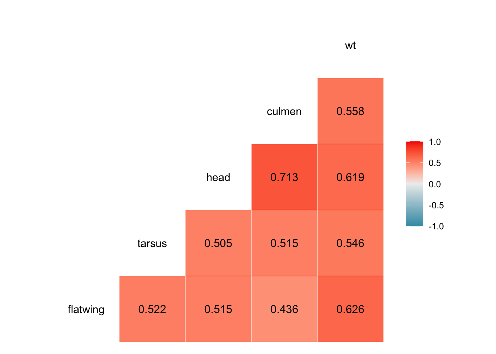

Chapter 13 Other visualizations
13.1 Barplot
Barplot is a common way to visualize the distribution of a categorical variable. In this example, we will use the ggplot2 package to create a barplot.
This should be used when you have count data and want to compare the counts of different categories. Bar are not used to show mean or median values, but to show the frequency of the data.
#Create a bar plot of number of male, female and juvenile Anolis lizards in the SEX_AGE variable

13.2 Line chart
Line charts are used to show trends over time or other continuous variables. In this example, we will use the ggplot2 package to create a line chart of the death rate caused by Tiroide cancer variable in the Tiroide dataset in the library(ggversa).
library(ggversa)
ggplot(Tiroide, aes(x = Year, y = Rate, colour=Cases, group = Cases)) +
geom_line()
13.3 Heat map
Heat map are an effective visualization technique for showing patterns in large datasets. In this example, we will use the ggplot2 package to create a heat map of the SparrowElphick dataset in the ggversa library.
Let select a subset of the variables in the SparrowElphick dataset to create a heat map. We will use the dplyr package to select the variables flatwing. tarsus, head, culmen and wt. the variables definition are lenght of the wing when expanded, the length of the tarsus, the length of the head, the length of the culmen and the weight of the bird respectively.
## wingcrd flatwing tarsus head culmen nalospi wt bandstat initials Year Month
## 1 59.0 60.0 22.3 31.2 12.3 13.0 9.5 1 2 2002 9
## 2 54.0 55.0 20.3 28.3 10.8 7.8 12.2 1 2 2002 10
## 3 53.0 54.0 21.6 30.2 12.5 8.5 13.8 1 2 2002 10
## 4 55.0 56.0 19.7 30.4 12.1 8.3 13.8 1 8 2002 7
## 5 55.0 56.0 20.3 28.7 11.2 8.0 14.1 1 3 2002 10
## 6 53.5 54.5 20.8 30.6 12.8 8.6 14.8 1 7 2004 8
## Day Location SpeciesCode Sex Age
## 1 19 4 1 0 2
## 2 4 4 3 0 2
## 3 4 4 3 0 2
## 4 30 9 1 0 2
## 5 4 4 3 0 2
## 6 2 1 1 0 2Now let us calculate the Kendall correlation between the variables in the Sparrow dataset. The Kendall correlation is a non-parametric measure of association between two variables. It is used to measure the strength and direction of the relationship between two variables. The Kendall correlation ranges from -1 to 1, where -1 indicates a perfect negative relationship, 0 indicates no relationship, and 1 indicates a perfect positive relationship.
We will round the values to 3 significant figures.
## flatwing tarsus head culmen wt
## flatwing 1.000 0.347 0.350 0.233 0.457
## tarsus 0.347 1.000 0.375 0.275 0.365
## head 0.350 0.375 1.000 0.472 0.443
## culmen 0.233 0.275 0.472 1.000 0.325
## wt 0.457 0.365 0.443 0.325 1.000The next step is creating a data frame from the correlation matrix.
Note here we reshape the data frame to a long format using the melt function from the reshape2 package. This is because the ggplot2 package requires data in a long format to create a heat map.
melted_cor <- reshape2::melt(cor(Sparrow, method = "kendall", use="pairwise.complete.obs"))
melted_cor## Var1 Var2 value
## 1 flatwing flatwing 1.0000000
## 2 tarsus flatwing 0.3465829
## 3 head flatwing 0.3504429
## 4 culmen flatwing 0.2328006
## 5 wt flatwing 0.4569716
## 6 flatwing tarsus 0.3465829
## 7 tarsus tarsus 1.0000000
## 8 head tarsus 0.3754616
## 9 culmen tarsus 0.2745705
## 10 wt tarsus 0.3648428
## 11 flatwing head 0.3504429
## 12 tarsus head 0.3754616
## 13 head head 1.0000000
## 14 culmen head 0.4717295
## 15 wt head 0.4429692
## 16 flatwing culmen 0.2328006
## 17 tarsus culmen 0.2745705
## 18 head culmen 0.4717295
## 19 culmen culmen 1.0000000
## 20 wt culmen 0.3245723
## 21 flatwing wt 0.4569716
## 22 tarsus wt 0.3648428
## 23 head wt 0.4429692
## 24 culmen wt 0.3245723
## 25 wt wt 1.0000000Now let us create a heat map of the correlation matrix using the ggplot2 package.
The blue color indicates a negative correlation, the red color indicates a positive correlation, and the white color indicates no correlation. In this case there are no negative correlation, but there are a range of positive correlation values.
ggplot(melted_cor, aes(Var1, Var2, fill = value)) +
geom_tile() +
scale_fill_gradient2(low = "blue", high = "red") +
theme_minimal() +
theme(axis.text.x = element_text(angle = 45, hjust = 1))There is an alternative to the above heat map, using the package GGally. This package provides a function called ggcorr that creates a correlation matrix plot. The ggcorr function creates a heat map of the correlation matrix with the correlation values displayed in the cells.
Note now we are facilitating the visualization of the data and only add one line of code to create the heat map. To observe the correlation values, we can use the label = TRUE argument. To change the number of decimal places, we can use the label_round argument.
## Registered S3 method overwritten by 'GGally':
## method from
## +.gg ggplot2
13.4 Plot of mean and confidence intervals
In this example, we will use the ggplot2 package to create a plot of the mean and confidence intervals of the weight variable in the SparrowsElphick dataset in the ggversa library. We will use the stat_summary function to calculate the mean and confidence intervals of the weight variable and the geom_errorbar function to plot the confidence intervals. We calculates the mean and confidence intervals using the mean_cl_normal for each of the species in the dataset (note the species are coded 1, 2 and 3, these were changed to factors) .
13.5 MAJOR error: CAUTION
In many papers the to show the mean the authors draw a barplot and then they and the CI. This is a major error. The barplot is used to show the frequency of the data, not the mean. The mean should be shown with a point and the CI with a line.
SO THE figure below should NEVER be used to show the mean and CI of the data.
Compare the two figures and you will see that the previous figure with a point and a line is the correct way to show the mean and CI of the data as it better reflects the data.
ggplot(SparrowsElphick, aes(x = as.factor(SpeciesCode), y = wt)) +
stat_summary(fun.data = mean_cl_normal, geom = "bar") +
stat_summary(fun.data = mean_cl_normal, geom = "errorbar", width = 0.2)+
ylab("Mean and CI of the weight variable")